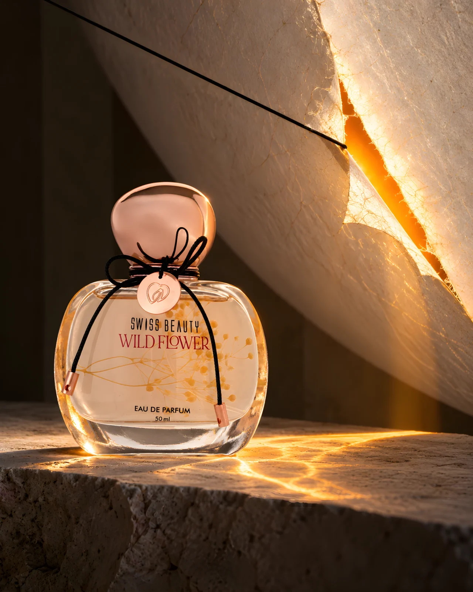
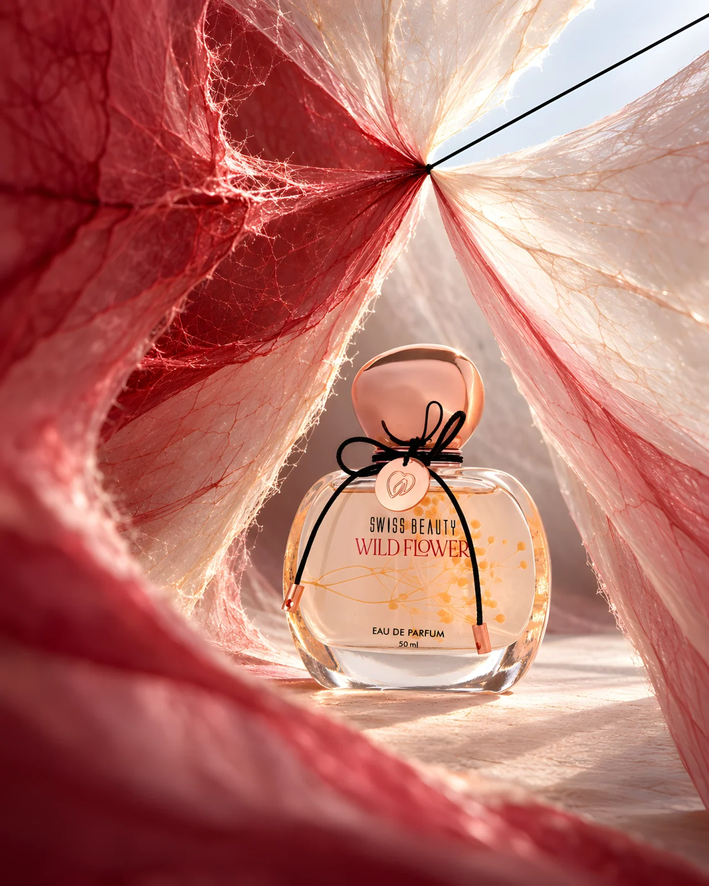
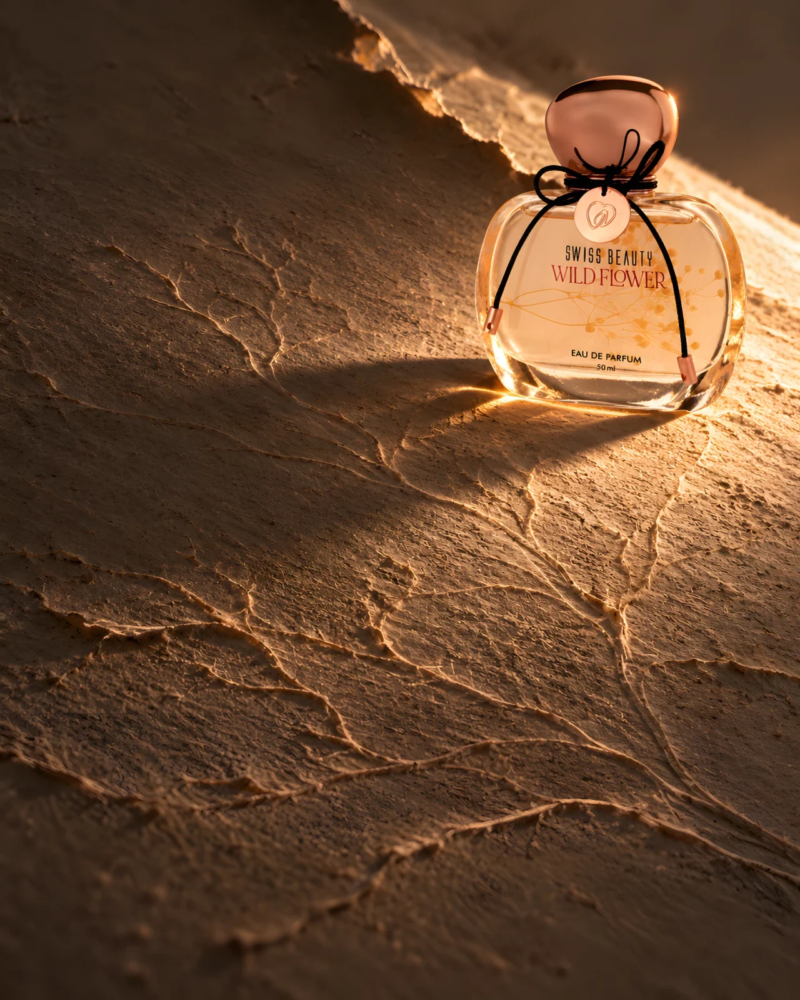
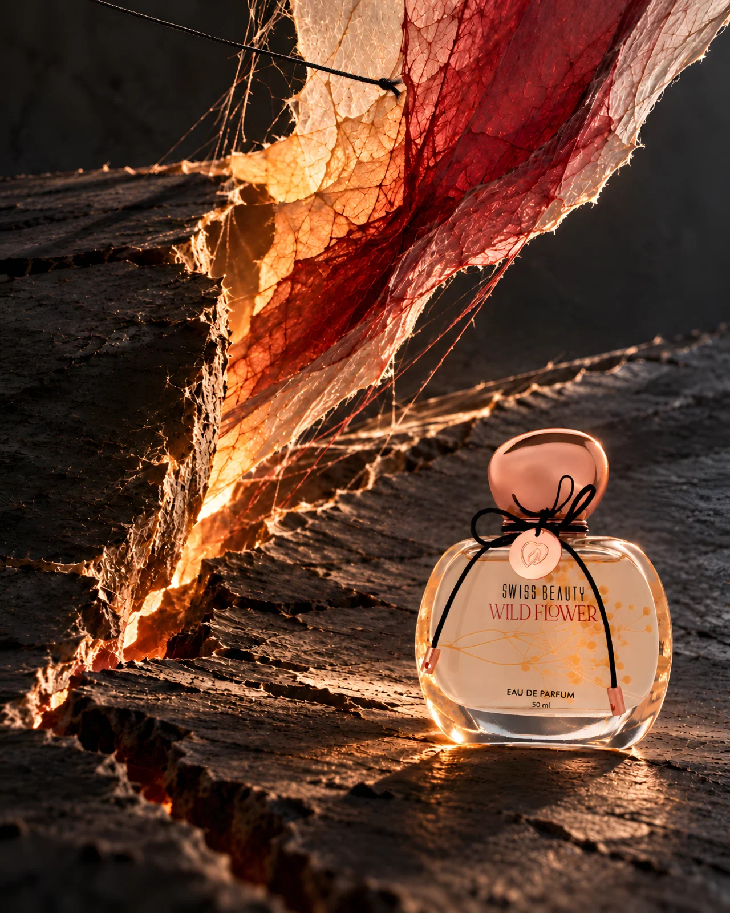

WILDFLOWER
Swiss Beauty Wildflower: four fragrance stages translated into one material under tension.

The idea
A separate black filament echoes the cord on the actual bottle. It cuts an amber opening for mandarin, draws translucent carmine layers together for peony and rose, leaves a shallow afterimage for musk, then tears the surface into a raw final release. The bottle stays intact while its world changes around it.
Making the world
Fibrous membranes, mineral-paper relief and raking light give each note a different physical consequence. These are AI-assisted concept images referenced to the retail bottle, not a photographed installation or a pixel-faithful product composite. The 4K-sized files are enhanced from smaller generated studies; fine label details and set mechanics require verification before commercial use.
The series


